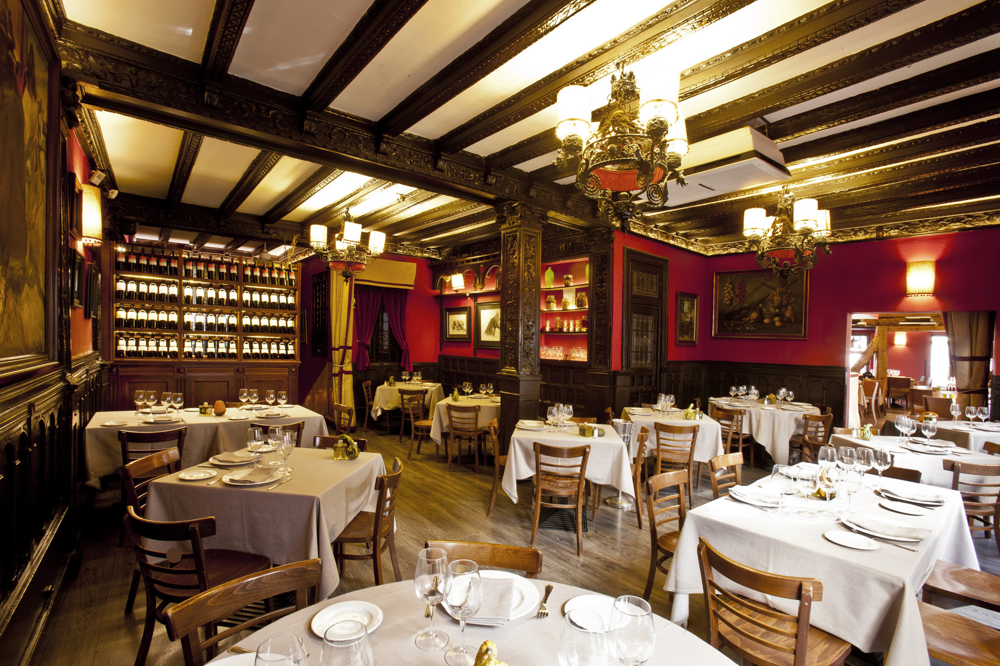
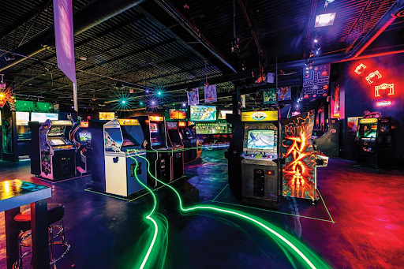

Salidas Registradas

Cafeterias
Fecha: 04/09/2025
Estado: Activo

Restaurantes
Fecha: 04/09/2025
Estado: Activo


Selecciona la salida que desea actualizar haciendo clic sobre su fila. Al hacerlo, el panel lateral derecho despliega los detalles completos de la salida. En este panel existe una sección llamada "Configuración de Estado", que incluye un interruptor o selector desplegable que muestra el estado actual de la salida (“Activo”). Al presionar el selector, aparece una lista con los estados disponibles. El usuario elige la opción "Inactivo". Una vez que el usuario confirma, el sistema ejecuta la actualización. El estado del proyecto se modifica a “Inactivo”, la fila en la tabla cambia su color indicativo a gris tenue para diferenciarlo visualmente